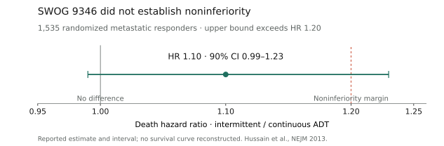

Home / GU oncology / Prostate / mHSPC
Prostate → mHSPC
Intermittent-ADT claims and citations audited against primary sources 2026-10-05; other sections retain the 2026-09-22 review. NCCN text was not retrieved in this update.
Evidence page
Who this applies to
- Synchronous or metachronous metastatic hormone-sensitive prostate cancer (mHSPC / mCSPC / mAPMN/S)13.
- Subclassify: high vs low volume (CHAARTED-style)10, de novo vs recurrent, visceral disease, fitness for docetaxel, PSMA PET status, BRCA2/HRR4, PTEN IHC12, comorbidities (hepatic, cardiac, falls).
Standard options
| Clinical group | Option | Key inclusion | Typical course |
|---|---|---|---|
| Most fit patients with mHSPC | ADT plus ARPI doublet56789 | Confirm metastatic hormone-sensitive state and comorbidity profile13. | Continue per regimen until progression or unacceptable toxicity13. |
| Chemo-fit, de novo high-volume/high-risk disease | ADT plus ARPI plus docetaxel discussion12 | ARASENS/PEACE-1 populations; triplets were not compared with every modern doublet12. | Protocol- and regimen-specific12. |
| PSMA-positive or biomarker-defined population | Labeled radioligand or biomarker-directed combination3412 | Match exact imaging or companion-diagnostic criteria3412. | Label-specific3412. |
- Fit, most patients: ADT + ARPI doublet (ARANOTE, ARCHES, ENZAMET, TITAN, LATITUDE, STAMPEDE abi)5896711.
- Fit, high-volume / high-risk, chemo-fit: discuss ADT + ARPI ± docetaxel. ARASENS and PEACE-1 are triplets vs ADT+docetaxel ± placebo/no abi, not vs modern doublet12.
- PSMA+ and candidate for radioligand: ADT + ARPI + 177Lu-PSMA-617 7.4 GBq q6wk × up to 6 (PSMAddition / FDA)3.
- BRCA2 (FDA): ADT + Akeega (niraparib 200 mg + abiraterone 1000 mg) + prednisone 5 mg daily. Do not treat every non-BRCA2 HRR hit as equivalent (FDA exploratory non-BRCA2m rPFS HR 0.88, CI crosses 1)4.
- PTEN-deficient by FDA-authorized IHC (VENTANA PTEN SP218): ADT + capivasertib 400 mg BID 4 days on / 3 off + abiraterone 1000 mg + prednisone 5 mg daily (CAPItello-281 / FDA 12 Jun 2026). OS immature — shared decision12.
- Local therapy: prostate RT / metastasis-directed therapy in selected low-volume / oligometastatic cases — coordinate with rad onc / urology. PEACE-1 RT interaction was not significant in the abi analysis; RT-specific coprimary details are not in this brief’s sources214.
Therapy sequencing
| Starting point or branch | Preferred order | Evidence boundary |
|---|---|---|
| Newly diagnosed or recurrent mHSPC | Start ADT plus an ARPI doublet for most fit patients56789. | The pivotal doublet trials are not head-to-head comparisons that select one ARPI for every patient13. |
| De novo high-volume/high-risk and chemotherapy fit | Discuss ADT plus ARPI plus docetaxel rather than adding docetaxel after a doublet has failed12. | ARASENS and PEACE-1 tested treatment intensification at mHSPC presentation, not delayed triplet escalation12. |
| PSMA-positive disease eligible for radioligand | ADT plus ARPI → add 177Lu-PSMA-617 as the PSMAddition regimen3. | This is an mHSPC intensification pathway; prior radioligand exposure changes future marrow and sequencing assessment3. |
| BRCA2-mutated or PTEN-deficient disease | Use the specifically labeled biomarker-directed ADT combination at mHSPC presentation when appropriate412. | Do not generalize Akeega to non-BRCA2 HRR alterations or capivasertib to PTEN-unselected disease412. |
| Progression with castrate testosterone | Continue ADT and enter the mCRPC pathway with a full record of ARPI, docetaxel, radioligand, and biomarker-directed exposure13. | This page does not establish a preferred sequence after mHSPC intensification13. |
Surveillance and treatment de-escalation
Intermittent ADT in mCSPC
- Continuous ADT-based combination therapy remains the standard. EAU states that intermittent ADT has been superseded by continuous combination treatment; survival equivalence in metastatic disease remains unproven. The 2026 AUA/SUO panel generally advises against intermittent ADT in mHSPC1428.
- A-DREAM supplies prospective evidence that some exceptional responders can have a meaningful treatment-free interval after ADT plus an androgen-receptor pathway inhibitor (ARPI). It is a small, single-arm phase 2 study; it cannot establish survival equivalence to continued treatment2021.
| Situation | Decision supported by the evidence | Boundary |
|---|---|---|
| Routine mCSPC treatment | Continue ADT plus the indicated combination14. | The pivotal combination evidence uses continuous ADT14. |
| Exceptional response; substantial treatment burden; considering a break | Discuss trial participation and the A-DREAM eligibility and monitoring framework2022. | Clinical interpretation: a selected-patient discussion, not an established replacement for continuous therapy; no randomized survival comparison2021. |
| Low-volume / oligometastatic disease | Discuss local therapy in the appropriate multidisciplinary setting23. | EXTEND tested adding metastasis-directed therapy (MDT) to intermittent hormone therapy; it did not compare intermittent with continuous therapy23. |
| Nonmetastatic PSA recurrence after radiotherapy | PR.7 supports an intermittent strategy in its enrolled population18. | This is adjacent evidence; do not transfer its noninferiority result to mCSPC1718. |
Published interruption protocols
These are trial-specific schedules and thresholds, not interchangeable prescribing rules16222425.
| Protocol | Who entered the interruption phase | What stops / continues | Surveillance and restart |
|---|---|---|---|
| SWOG 9346 — historical | Stable/falling PSA ≤4 ng/mL at months 6 and 7 of LHRH-agonist plus older antiandrogen induction16. | Stop hormonal treatment; subsequent cycles permitted if response criteria recur16. | Monthly PSA; assessment every 3 months. Restart at PSA 20 ng/mL (or pretreatment baseline if lower); earlier at PSA 10 or symptoms at investigator discretion. Rising PSA by month 3 of a break required continuous treatment16. |
| A-DREAM — investigational | 18–24 months ADT; ≥12 months ARPI; PSA <0.2 ng/mL, stable/falling over 3 consecutive same-laboratory measurements; testosterone <50 ng/dL. No liver/brain metastases2122. | Stop both ADT and ARPI22. | Clinical assessment, PSA/testosterone and labs every 3 months; CT/MRI chest/abdomen/pelvis plus bone scan every 6 months, with 3-month interim imaging recommended for rising PSA. Restart for PSA ≥5 ng/mL, radiographic progression or cancer-related symptoms22. |
| LIBERTAS — investigational | PSA <0.2 ng/mL after 6 months apalutamide plus ADT24. | Interrupt ADT; apalutamide continues24. | Protocol restart triggers include new/worsening cancer symptoms, PSA >10 ng/mL (or pretreatment baseline if lower), or PSA doubling time <6 months27. |
| EORTC 2238 DE-ESCALATE — investigational | PSA ≤0.2 ng/mL after 6–12 months ADT plus ARPI25. | Interrupt both ADT and ARPI25. | Restart at investigator discretion for significant PSA increase; the registry permits another interruption once PSA <0.2 ng/mL25. |
Clinical interpretation: before an off-protocol discussion, document the disease extent, response duration, exact drugs being interrupted, patient priorities, monitoring plan and explicit restart triggers. A low PSA alone does not establish that interruption preserves survival142022.
| Setting | PSA | Imaging | Stop/de-escalate | Re-escalate |
|---|---|---|---|---|
| On ADT plus ARPI or triplet13 | PSA and testosterone every 3 months; CBC/CMP and regimen-specific labs per label1314. | Cross-sectional imaging every 6–12 months or for symptoms1314. | Continue systemic therapy until radiographic or clinical progression or unacceptable toxicity; hold individual agents for toxicity rather than stopping ADT. Fixed-cycle components (docetaxel ×6, 177Lu-PSMA-617 up to 6 doses) complete per protocol then continue the remaining backbone1313. | Castration-resistant progression on conventional or PSMA imaging → mCRPC pathway with full prior-exposure documentation13. |
| After completing fixed-cycle intensification13 | Same PSA/testosterone every-3-month cadence; marrow and renal monitoring after radioligand or taxane exposure313. | Same risk-adapted 6–12 month or symptom-triggered imaging1314. | Do not stop ADT at progression to CRPC13. | See Therapy sequencing for biomarker-directed and next-line options41213. |
- Risk-adapted imaging follows EAU/NCCN frameworks: low burden may extend imaging intervals when clinically appropriate; symptomatic or PSA-rise triggers restaging1314.
- PSMA PET may refine oligometastatic/local therapy decisions but does not replace castration assessment or conventional progression evaluation when clinically indicated314.
Landmark evidence
Cross-trial comparisons are indirect. Source access and endpoint-specific confidence levels are identified below and in Sources.
Intermittent-therapy evidence
The SWOG primary interval is 90%; the PR.7 and EXTEND intervals below are 95%. The A-DREAM primary registry interval is 80%. These endpoints and populations should not be ranked against one another16182123.
| Trial | Population | Intervention | Comparator | Primary endpoint | Clinically meaningful outcomes | Generalizability-critical differences |
|---|---|---|---|---|---|---|
| SWOG 9346; phase 3 | 1,535 metastatic responders in the primary analysis (770 intermittent; 765 continuous)16. | Intermittent LHRH agonist plus older antiandrogen after 7-month induction (goserelin/bicalutamide or equivalents)16. | Continuous hormonal treatment with the same backbone16. | Coprimary: overall survival (OS; noninferiority margin HR 1.20) and 3-month quality of life16. | Median OS 5.1 vs 5.8 years; death HR 1.10 (90% CI 0.99–1.23). Noninferiority not established16. | Pre-modern-ARPI treatment; result inconclusive, not proof of either equivalence or significant inferiority16. |
| A-DREAM / Alliance A032101; phase 2 | 78 eligible exceptional responders to ADT plus ARPI2021. | Stop both drugs22. | None: single-arm20. | Treatment-free at 18 months with testosterone recovery to study threshold ≥150 ng/dL21. | 32/78 (41.0%); registry 80% CI 33.1–48.9%. ASCO abstract: 45/78 (58%) treatment-free regardless of testosterone; 52/78 (67%) recovered testosterone2021. | Highly selected; no randomized control; abstract median follow-up 21.2 months. OS preservation not demonstrated; the study threshold is not a general definition of normal testosterone2021. |
| PR.7; phase 3 | 1,386 patients with PSA >3 ng/mL, >1 year after primary/salvage radiotherapy; no distant metastases18. | LHRH agonist in 8-month cycles plus nonsteroidal antiandrogen for ≥4 weeks each cycle18. | Continuous LHRH agonist plus antiandrogen for ≥4 weeks, or orchiectomy18. | OS noninferiority; margin HR 1.2518. | Median OS 8.8 vs 9.1 years; HR 1.02 (95% CI 0.86–1.21); noninferior in this population18. | M0 biochemical recurrence; does not resolve the metastatic question1718. |
| EXTEND; randomized phase 2 | 87 men with ≤5 metastases; intermittent-hormone basket23. | Definitive radiation to all metastases plus intermittent hormone therapy23. | Intermittent hormone therapy alone23. | Progression-free survival (PFS)23. | Median PFS not reached vs 15.8 months; HR 0.25 (95% CI 0.12–0.55)23. | Planned hormone break at 6 months in both arms; tests MDT addition, not interruption safety versus continuous therapy. Abstract-only retrieval; no inference of a pure mCSPC cohort or uniform modern ARPI regimen23. |

Source-recreated interval summary, not a Kaplan–Meier curve. The upper bound crosses the prespecified margin, so a 20% higher death hazard cannot be excluded; the interval also includes 1.001617.
Low disease burden does not establish interruption safety
- SWOG’s exploratory minimal-disease subgroup had median OS 5.4 years with intermittent versus 6.9 years with continuous treatment (HR 1.19; 95% CI 0.98–1.43). “Minimal” meant metastases confined to spine, pelvic bones or nodes, not the CHAARTED low-volume definition. Interpretation: this subgroup result does not identify a population in which survival equivalence is established16.
Why older pooled evidence looks more reassuring
- Magnan et al. included 15 trials / 6,856 patients; the OS analysis used 8 trials / 5,352 patients: HR 1.02 (95% CI 0.93–1.11). The pooled analysis met its noninferiority criterion; most studies had unclear/high risk of bias19.
- Interpretation: mixed recurrent/advanced populations and pre-ARPI regimens make this indirect evidence for current mCSPC treatment. The metastatic-only SWOG result and modern combination-treatment evidence remain central141719.
A-DREAM evidence maturity
- ASCO 2026 abstract 5004 reports the phase 2 primary objective was met; patient-reported outcomes and biomarker analyses were still in progress20.
- ClinicalTrials.gov results were posted 2026-08-31. The registry confirms the 41.0% primary rate, but OS, radiographic PFS and duration-off-treatment results are not posted21.
- Source discrepancy retained: the abstract gives an 80% CI of 33.5–48.9%; the registry gives 33.1–48.9%. The table uses the posted registry interval. No full peer-reviewed efficacy manuscript was located in this search2021.
- The registry primary endpoint uses testosterone ≥150 ng/dL; the abstract describes >150 ng/dL. This page uses the registry definition and reports the difference rather than silently merging the two. The registry description also contains an ng/mL unit typo; its endpoint title and protocol schema use ng/dL202122.
Modern observational evidence
- Talmor et al. reported a retrospective cohort of 69 selected deep responders with mHSPC or mCRPC who stopped ADT plus ARPI after ≥12 months without progression. Pooled median treatment-free survival was 35 months; the mHSPC subgroup median was not reached. These are single-cohort findings with no randomized continuous-treatment comparator; they support feasibility and cannot establish survival noninferiority. Only the published abstract was retrieved29.
| Trial | Population | Intervention arm | Control arm | Key outcomes (both arms) | Key HR | Evidence status |
|---|---|---|---|---|---|---|
| ARASENS NCT02799602 | mHSPC; 86.1% de novo; N=13061 | Darolutamide 600 mg BID + ADT + docetaxel1 | Placebo + ADT + docetaxel1 | OS: both-arm medians not in sources; grade 3–4 AE 66.1% vs 63.5%1 | OS HR 0.68 (95% CI 0.57–0.80)1 | Smith 2022 NEJM PMID 351793231 |
| ARANOTE | mHSPC; N=669 (2:1)5 | Darolutamide 600 mg BID + ADT5 | Placebo + ADT5 | rPFS medians not in sources; OS immature5 | rPFS HR 0.54 (0.41–0.71); OS HR 0.81 (0.59–1.12)5 | Saad 2024 JCO PMID 392795805 |
| PEACE-1 NCT01957436 | De novo mCSPC; N=1173 factorial; docetaxel subset n=355 per abi yes/no2 | ADT ± docetaxel 75 mg/m² q3wk + abi 1000 mg + pred 5 mg BID ± prostate RT2 | Same SOC without abi2 | Docetaxel pop grade ≥3 AE 63% vs 52%; medians not in PubMed abstract2 | Docetaxel subset rPFS HR 0.50 (99.9% CI 0.34–0.71); OS HR 0.75 (95.1% CI 0.59–0.95)2 | Fizazi 2022 Lancet PMID 354050852 |
| ARCHES NCT02677896 | mHSPC; N=11508 | Enzalutamide 160 mg daily + ADT8 | Placebo + ADT8 | Median rPFS NR vs 19.0 mo; 5-y OS 66% vs 53% (post hoc)8 | rPFS HR 0.39 (0.30–0.50); 5-y OS HR 0.70 (0.58–0.85), nominal p8 | Armstrong 2019 JCO PMID 31329516; 5-y Eur Urol PMID 416339008 |
| ENZAMET | mHSPC; N=1125; early docetaxel allowed9 | Testosterone suppression + enzalutamide9 | Testosterone suppression + NSAA9 | 3-y OS 80% vs 72%; 8-y OS 50% vs 40%; median OS 7.9 vs 5.8 y9 | OS HR 0.67 (0.52–0.86) primary; 8-y OS HR 0.73 (0.63–0.86)9 | Davis 2019 NEJM PMID 31157964; 8-y Ann Oncol PMID 426077629 |
| TITAN NCT02489318 | mCSPC; N=1052; high-volume 62.7%6 | Apalutamide 240 mg daily + ADT6 | Placebo + ADT6 | 24-mo rPFS 68.2% vs 47.5%; 24-mo OS 82.4% vs 73.5%6 | rPFS HR 0.48 (0.39–0.60); OS HR 0.67 (0.51–0.89)6 | Chi 2019 NEJM PMID 311505746 |
| LATITUDE | Newly diagnosed high-risk mCSPC; N=11997 | ADT + abi 1000 mg + pred 5 mg daily7 | ADT + dual placebo7 | Median OS NR vs 34.7 mo; rPFS 33.0 vs 14.8 mo7 | OS HR 0.62 (0.51–0.76); rPFS HR 0.47 (0.39–0.55)7 | Fizazi 2017 NEJM PMID 285786077 |
| CHAARTED NCT00309985 | mHSPC; N=79010 | ADT + docetaxel 75 mg/m² q3wk ×610 | ADT alone10 | Median OS 57.6 vs 44.0 mo; TTP 20.2 vs 11.7 mo10 | OS HR 0.61 (0.47–0.80)10 | Sweeney 2015 NEJM PMID 2624487710 |
| PSMAddition NCT04720157 | PSMA+ metastatic APMN/S; N=1144; 68% high-volume3 | 177Lu-PSMA-617 7.4 GBq q6wk ×≤6 + ADT + ARPI3 | ADT + ARPI (crossover after rPD allowed)3 | rPFS events 139/572 vs 172/572; median NR vs NR; dry mouth 46% vs 4%3 | rPFS HR 0.72 (0.58–0.90). OS HR not in Lancet abstract3 | Tagawa 2026 Lancet PMID 42561994; FDA 31 Jul 20263 |
| AMPLITUDE NCT04497844 | HRR-altered mCSPC; N=696; BRCA 56%4 | Niraparib + AAP + ADT4 | Placebo + AAP + ADT4 | BRCA rPFS NR vs 26 mo; grade 3–4 AE 75% vs 59%4 | BRCA rPFS HR 0.52 (0.37–0.72); ITT rPFS HR 0.63 (0.49–0.80); OS HR 0.79 (0.59–1.04) immature4 | Attard 2025 Nat Med PMID 41057655; FDA Akeega BRCA2 mCSPC 12 Dec 20254 |
| CAPItello-281 NCT04305496 | Newly diagnosed PTEN-deficient mAPMN/S; N=101212 | Capivasertib 400 mg BID 4 on/3 off + abi + pred + ADT12 | Placebo + abi + pred + ADT12 | Median rPFS 33.2 vs 25.7 mo; OS immature at rPFS analysis12 | rPFS HR 0.81 (0.66–0.98). OS not mature12 | FDA 12 Jun 2026; companion VENTANA PTEN (SP218) RxDx12 |
STAMPEDE abi (James 2017 NEJM PMID 28578639): mixed M0/M1 starting ADT; OS HR 0.63 (0.52–0.76); metastatic subgroup HR 0.61. Not a pure mHSPC-only table row11.
Biomarkers
| Marker | Current clinic role | Emerging / investigational | How it changes decision now | Limits |
|---|---|---|---|---|
| Volume / risk (CHAARTED-style high vs low volume; LATITUDE-style high-risk) | Subclassifies disease burden and frames intensification discussion10712 | — | High-volume/high-risk chemo-fit patients prompt ADT + ARPI ± docetaxel discussion (ARASENS/PEACE-1)1210. | Triplet trials were not compared with every modern doublet; volume alone does not mandate a specific ARPI1213. |
| BRCA2 / HRR | BRCA2 selects labeled Akeega (niraparib + abiraterone) + ADT in mCSPC4 | Broader HRR panels for later CRPC PARP use4 | Use germline + somatic NGS; treat BRCA2 per FDA label when appropriate4. | Do not treat every non-BRCA2 HRR alteration as equivalent (FDA exploratory non-BRCA2m rPFS HR 0.88, CI crosses 1)4. |
| PSMA PET | Staging and 177Lu-PSMA-617 eligibility with an approved tracer3 | Expanding radioligand use in mHSPC (PSMAddition)3 | PSMA-positive candidates may add 177Lu-PSMA-617 to ADT + ARPI per label3. | Does not replace castration assessment or conventional progression evaluation when clinically indicated314. |
| MSI / TMB | Later-line consideration after progression to CRPC13 | Expanding tumor-agnostic immunotherapy use13 | Does not select first-line mHSPC intensification on this page13. | Not an mHSPC treatment selector in the source pack13. |
| Testosterone / PSA kinetics | Confirm castration on ADT; track response1314 | — | Document castrate testosterone; use PSA kinetics with imaging for response and progression assessment1314. | PSA alone does not replace radiographic progression criteria1314. |
| PTEN IHC (VENTANA PTEN SP218) | Companion diagnostic for capivasertib + abiraterone in newly diagnosed PTEN-deficient disease12 | — | ≥90% viable malignant cells with no specific cytoplasmic staining defines deficiency for the labeled combination (FDA 12 Jun 2026); OS immature — shared decision12. | Do not extend to PTEN-unselected disease12. |
Upcoming research
Modern treatment-interruption trials
| Program | Strategy and key question | Status checked 2026-10-05 |
|---|---|---|
| LIBERTAS — NCT05884398 | Apalutamide continues while ADT is intermittent versus continuous; co-primary outcomes are 18-month radiographic PFS and hot-flash score24. | Active, not recruiting; no registry results. Estimated primary completion 2026-10-12, not a guaranteed readout date. ASCO 2026 data retrieved here describe induction PSA response, not randomized interruption efficacy2426. |
| EORTC 2238 DE-ESCALATE — NCT05974774 | Intermittent versus continuous ADT plus ARPI after a deep response; co-primary objectives include OS noninferiority and avoiding restart for 1 year25. | Recruiting in the latest registry record; no results posted25. |
Field direction: intensification beyond ADT/ARPI now includes radioligand (PSMAddition), PARP (AMPLITUDE), and AKT (CAPItello-281) pathways in selected mHSPC; mature OS and oligometastatic local therapy still shape uptake34122.
| Program | Why it may change care | Evidence status |
|---|---|---|
| CAPItello-281, PSMAddition, AMPLITUDE mature OS | Confirms durability of AKT, radioligand, and PARP intensification beyond currently reported endpoints1234. | Peer-reviewed primary reports exist; longer OS follow-up ongoing / pending maturity1234. |
| TALAPRO-3 | Would clarify talazoparib plus enzalutamide in hormone-sensitive disease15. | No phase 3 primary result in this pack15. |
| Prostate radiotherapy / metastasis-directed therapy in oligometastatic HSPC | PEACE-1 radiotherapy coprimary not fully extracted here; local therapy remains a practice question2. | Peer-reviewed PEACE-1 systemic data; RT coprimary incomplete in this pack2. |
Toxicity
Does an intermittent strategy reduce treatment burden?
| Evidence | Finding | Counseling implication |
|---|---|---|
| SWOG 9346 | Erectile function and mental health favored intermittent treatment at 3 months. Table 2 also shows an erectile-function difference at 9 months; neither difference was significant at 15 months. Grade 3–4 treatment-related events: 30.4% intermittent vs 32.7% continuous, P=0.531617. | Selected symptoms may improve versus continuous therapy; a reduction in severe toxicity was not established16. |
| A-DREAM | 41% reached the combined treatment-free/testosterone-recovery endpoint; comparative quality-of-life benefit is not established by the available results2021. | Recovery is not guaranteed; discuss benefit alongside unresolved long-term cancer-control risk2021. |
| Regimen group | Trial-first safety signal | Counseling focus |
|---|---|---|
| ADT plus ARPI | Use the regimen-specific label and pivotal source; cross-trial safety comparisons are not valid56789. | Review fatigue, falls, hypertension, hepatic/cardiac effects, and sexual/bone/metabolic effects; promptly report severe symptoms13. |
| ADT plus ARPI plus docetaxel | ARASENS grade 3–4 AEs 66.1% vs 63.5%; PEACE-1 docetaxel population grade ≥3 AEs 63% vs 52%12. | Urgent contact for fever/infection, progressive neuropathy, dehydration, or severe fatigue12. |
| 177Lu-PSMA-617 plus ADT/ARPI | PSMAddition grade ≥3 AEs 51% vs 43%; dry mouth 46% vs 4%3. | Review xerostomia, cytopenic symptoms, nausea, and marrow/renal monitoring3. |
| Niraparib plus abiraterone/prednisone plus ADT | AMPLITUDE grade 3–4 AEs 75% vs 59%; grade 3–4 anemia 29%4. | Monitor counts and blood pressure; urgently assess dyspnea, chest symptoms, bleeding, or marked fatigue4. |
On-treatment monitoring
| SOC/option regimen | Hallmark monitoring toxicity and available rate | Patient action / clinic response |
|---|---|---|
| ADT backbone | This page does not specify one ADT product, so no defensible generic pivotal frequency is assigned13. | Monitor hot flashes, energy/mood and sexual changes, bone density, metabolic health, and cardiovascular risk; chest symptoms, syncope, or severe mood symptoms needs prompt contact13. |
| Darolutamide plus ADT | ARANOTE: hypertension 8.5%, grade 3–4 4.3%; ALT increase 9.0%, grade 3–4 2.0%5. | Monitor blood pressure and liver tests; sustained hypertension symptoms or jaundice needs prompt contact5. |
| Enzalutamide plus ADT | ENZAMET: grade 3–4 fatigue 6% vs 1%, hypertension 10% vs 6%, and memory impairment 13% vs 4%9. | Monitor fatigue, blood pressure, falls/cognition, and seizure-like symptoms; a fall, new confusion, loss of consciousness, or chest symptoms needs prompt contact9. |
| Apalutamide plus ADT | TITAN: rash 27.1% vs 8.5%, grade ≥3 treatment-related rash 6.3%; hypothyroidism 6.5% vs 1.1%; ischemic heart disease 4.4% vs 1.5%6. | Monitor skin, thyroid symptoms, blood pressure, and cardiovascular symptoms; a spreading/blistering rash, cold intolerance, palpitations, or chest symptoms needs prompt contact6. |
| Abiraterone/prednisone plus ADT | LATITUDE: hypertension 37%, grade 3–4 20%; hypokalemia 20%, grade 3–4 10%; ALT increase 16%, grade 3–4 5.5%7. | Monitor blood pressure, potassium, liver tests, fluid retention, and corticosteroid effects; severe headache, chest symptoms, weakness, jaundice, or edema needs prompt contact7. |
| ARPI plus docetaxel plus ADT | ARASENS: grade 3–4 neutropenia 33.7% vs 34.2%, febrile neutropenia 7.8% vs 7.4%, and hypertension 6.4% vs 3.2%. PEACE-1 docetaxel population grade ≥3 AEs 63% vs 52%12. | Check CBC and assess infection, sensory symptoms, diarrhea/dehydration, and fatigue; fever or infection symptoms needs urgent assessment12. |
| ADT plus 177Lu-PSMA-617 plus ARPI | PSMAddition: dry mouth 46% vs 4%; cytopenias 44% vs 20%, grade ≥3 14% vs 5%; overall grade ≥3 AEs 51% vs 43%3. | Monitor CBC, renal function, xerostomia, nausea, and marrow reserve; bleeding, fever, reduced urine output, or worsening fatigue needs prompt assessment3. |
| ADT plus niraparib/abiraterone/prednisone | AMPLITUDE: anemia 51.6%, grade ≥3 29.1%; hypertension 43.8%, grade ≥3 26.5%; transfusion 25.1%4. | Monitor CBC, blood pressure, potassium, and liver tests; dyspnea, chest symptoms, bleeding, or marked fatigue should prompt urgent contact4. |
| ADT plus capivasertib/abiraterone/prednisone | CAPItello-281: diarrhea 51.9%, grade ≥3 6.2%; hyperglycemia 38.0%, grade ≥3 10.3%; rash 35.4%, grade ≥3 12.3%12. | Monitor glucose, diarrhea, rash, blood pressure, potassium, and liver tests; persistent diarrhea, symptomatic hyperglycemia, extensive rash, or dehydration needs prompt contact12. |
Epic phrase
#Metastatic prostate cancer
- Counseling on treatment breaks: Continuous ADT-based combination treatment remains standard in mCSPC; AUA/SUO generally advises against intermittent ADT1428. SWOG did not establish survival noninferiority: median OS was 5.1 years with intermittent versus 5.8 years with continuous hormonal therapy (death HR 1.10; 90% CI 0.99–1.23)16. A-DREAM is a selected, single-arm phase 2 study with no randomized comparator after 18–24 months ADT and at least 12 months ARPI: about 41 in 100 were treatment-free with testosterone recovery to the registry’s study threshold of ≥150 ng/dL at 18 months; survival equivalence was not tested202122. Discussed investigational treatment interruption / trial participation, goals and uncertainty. ***
- If considering an A-DREAM-style interruption: Confirm sustained PSA <0.2 ng/mL on 3 consecutive same-laboratory measurements, testosterone <50 ng/dL and trial-relevant eligibility; stop both ADT and ARPI under an agreed investigational plan22. Clinical assessment, PSA/testosterone and labs every 3 months; CT/MRI chest/abdomen/pelvis plus bone scan every 6 months; interim imaging every 3 months is recommended during rising PSA22. Restart criteria discussed: PSA ≥5 ng/mL, radiographic progression or prostate-cancer-related symptoms. These are study rules rather than a validated universal standard22. ***
- Counseling: Reviewed ADT plus ARPI doublet as standard for most fit mHSPC. In TITAN (apalutamide), about 82 in 100 vs 74 in 100 were alive at 2 years with placebo (OS HR 0.67 vs placebo). In LATITUDE high-risk de novo disease, median overall survival was not reached vs about 35 months with ADT alone (OS HR 0.62 vs ADT alone). For docetaxel triplet in ARASENS, median OS was improved vs placebo plus ADT plus docetaxel (OS HR 0.68 vs placebo); for PEACE-1 docetaxel subset, OS HR 0.75 vs ADT plus docetaxel. PSMAddition rPFS HR 0.72 vs ADT plus ARPI; overall survival not mature in the retrieved Lancet abstract. CAPItello-281 and AMPLITUDE overall survival were immature at primary analysis—shared decision for biomarker combinations.
- Counseling: Reviewed surveillance and de-escalation: PSA/testosterone every 3 months; imaging every 6–12 months or for symptoms; complete fixed-cycle docetaxel or Pluvicto then continue ADT/ARPI backbone; hold agents for toxicity but continue ADT; castration-resistant progression → mCRPC pathway.
- Monitoring: With ADT plus ARPI, monitor blood pressure, falls/cognition, cardiovascular symptoms, metabolic and bone effects. With abiraterone/prednisone, check blood pressure, potassium, liver tests, and edema; with docetaxel, check CBC and infection/neuropathy symptoms; with Pluvicto, check CBC/renal function and xerostomia; with niraparib, check CBC; with capivasertib, check glucose, diarrhea, and rash. Contact oncology promptly for fever/infection, progressive neuropathy, severe fatigue, dyspnea, chest symptoms, diarrhea/dehydration, rash, or other concerning treatment effects. *** after-hours/urgent-assessment instructions reviewed.
- Discussed his workup to date, including ***
- Discussed treatment sequence: start ADT plus ARPI for most fit mHSPC; discuss concurrent triplet intensification for chemo-fit, de novo high-volume/high-risk disease; use PSMA- or biomarker-directed combinations at mHSPC presentation only when exact eligibility is met. On castration-resistant progression, continue ADT and reassess prior ARPI, taxane, radioligand, and biomarker-directed exposure for the mCRPC pathway. ***
- Discussed that while biopsy is needed for a definitive diagnosis, this is overall very suspicious for *synchronous *high volume metastatic HSPC with involvement of the *. Discussed prognosis and goal of therapy to control but not cure the cancer. Discussed treatment options including ADT + ARTA or triplet therapy with ADT + ARTA + docetaxel, though the specific contribution of chemotherapy to ADT+ARTA is not clear. Also discussed more recent data of ADT/ARPI + Pluvicto for PSMA+ disease (PSMAddition; FDA-approved with ARPI) or niraparib/abiraterone (Akeega) for BRCA2-mutated disease (not all HRR hits). For PTEN-deficient disease by companion IHC, discussed capivasertib + abiraterone/prednisone (CAPItello-281; FDA-approved; OS immature). Discussed potential side effects of ADT (fatigue, hot flashes, weight gain, muscle loss, ED, loss of libido, mood changes, increased CV risk, loss of bone density), darolutamide (cytopenias, hepatotoxicity, fatigue, cardiac toxicity), and docetaxel. He opts to proceed with * ADT + darolutamide (will start after tissue bx confirmation)
- Given patient education info on *** and darolutamide
- CBC, CMP, PSA, testosterone
- Germline (Invitae), blood NGS (Foundation), tissue NGS (Caris); ***PTEN IHC (VENTANA SP218) if considering capivasertib
- ***will pursue prostate biopsy to obtain definitive tissue diagnosis
- ***PSMA PET
- ***Will obtain DEXA
- Rx sent to start calcium/vitamin D
- ***statin
- referral to SW for the prostate cancer support group
- follow up urology
- ***refer to rad onc
Guideline references
- EAU Prostate Cancer — treatment, §§6.6.4.b and 6.6.5: continuous ADT-based combination treatment is the standard; intermittent metastatic survival equivalence remains unresolved14.
- AUA/SUO 2026 amendment, Part I: generally advises against intermittent ADT in mHSPC; its evidence search ended 2025-08-26 and therefore predates A-DREAM 202628.
- ASCO initial management guideline, 2021: separates M0 recurrent disease from the inconclusive metastatic SWOG evidence; historical guidance, preceding A-DREAM 202617.
- NCCN Prostate Cancer
- EAU Prostate Cancer guideline
- ASCO guideline portal
Sources
- Smith et al. (2022). ARASENS. *New England Journal of Medicine*. PMID: 35179323
- Fizazi et al. (2022). PEACE-1. *Lancet*. PMID: 35405085
- Tagawa et al. (2026). PSMAddition. *Lancet*. PMID: 42561994
- Attard et al. (2025). AMPLITUDE. *Nature Medicine*. PMID: 41057655
- Saad et al. (2024). ARANOTE. *Journal of Clinical Oncology*. PMID: 39279580
- Chi et al. (2019). TITAN. *New England Journal of Medicine*. PMID: 31150574
- Fizazi et al. (2017). LATITUDE. *New England Journal of Medicine*. PMID: 28578607
- Armstrong et al. (2019). ARCHES. *Journal of Clinical Oncology*. PMID: 31329516
- Davis et al. (2019). ENZAMET. *New England Journal of Medicine*. PMID: 31157964
- Sweeney et al. (2015). CHAARTED. *New England Journal of Medicine*. PMID: 26244877
- James et al. (2017). STAMPEDE abiraterone. *New England Journal of Medicine*. PMID: 28578639
- CAPItello-281; FDA approval of capivasertib with abiraterone for PTEN-deficient mAPMN/S (12 Jun 2026).
- NCCN Prostate Cancer
- EAU Prostate Cancer guideline, 2026. Full treatment chapter retrieved 2026-10-05; §§6.6.4.b and 6.6.5 support the intermittent-ADT and continuous-combination statements.
- ASCO guideline portal
- Hussain et al. (2013). SWOG 9346. *NEJM*. DOI: 10.1056/NEJMoa1212299; PMID: 23550669. PMC3682658 full text retrieved through NCBI BioC; Methods: Treatment Plan/Statistical Analysis; Results: Patients, Survival and Quality of Life; Figures 2–3 and Table 2.
- Virgo et al. (2021). Initial management of noncastrate advanced, recurrent, or metastatic prostate cancer: ASCO guideline update. *JCO*. DOI: 10.1200/JCO.20.03256; PMID: 33497248. Historical guideline; PubMed abstract Recommendations and publisher-indexed intermittent-ADT discussion retrieved, not a newly verified complete guideline.
- Crook et al. (2012). PR.7. *NEJM*. DOI: 10.1056/NEJMoa1201546; PMID: 22931259. PMC3521033 full text retrieved through NCBI BioC; Methods: Eligibility Criteria/Treatment Schema; Results: Overall Survival.
- Magnan et al. (2015). Intermittent versus continuous ADT: systematic review and meta-analysis. *JAMA Oncology*. DOI: 10.1001/jamaoncol.2015.2895; PMID: 26378418. PubMed abstract only: Data Synthesis, Results and Conclusions; full manuscript not retrieved.
- Choudhury et al. (2026). A-DREAM / Alliance A032101. *JCO* 44(suppl), abstract 5004. DOI: 10.1200/JCO.2026.44.16_suppl.5004. Conference abstract, not a full efficacy manuscript; abstract cutoff 2026-05-12. Methods, Results and Conclusions retrieved from publisher-indexed PDF text; direct publisher/PDF access returned 403.
- A-DREAM — NCT05241860. ClinicalTrials.gov: Eligibility; Results → Outcome measures. Results first posted 2026-08-31; record last updated 2026-09-24. Retrieved via API 2026-10-05.
- Alliance A032101 protocol/SAP, update 3, 2025-08-19. Full public registry protocol retrieved: schema p5; §3.2 eligibility; §5 calendar pp19–20; §7 restart and §11.1 imaging. Printed page numbers.
- Tang et al. (2023). EXTEND intermittent-hormone basket. *JAMA Oncology*. DOI: 10.1001/jamaoncol.2023.0161; PMID: 37022702. PubMed abstract: Design/Interventions/Results. PMC full text attempted but unavailable (recaptcha; BioC no result; author-repository PDF 403).
- LIBERTAS — NCT05884398. ClinicalTrials.gov: arms, endpoints and status; last updated 2026-09-25. Retrieved via API 2026-10-05.
- EORTC 2238 DE-ESCALATE — NCT05974774. ClinicalTrials.gov: arms, eligibility, endpoints and status; latest update 2025-09-19. Retrieved via API 2026-10-05.
- Gomes et al. (2026). LIBERTAS Latin American subgroup induction PSA responses. *JCO* 44(suppl), abstract 5021. DOI: 10.1200/JCO.2026.44.16_suppl.5021. Publisher-indexed conference abstract Methods/Results; induction outcomes rather than randomized interruption efficacy. Full efficacy manuscript not retrieved.
- Azad et al. (2026). LIBERTAS initial-treatment hot flashes and sleep metrics. ASCO GU poster, Figure 1 and footnote c: study design and ADT restart rules. Sponsor-hosted conference material.
- Scarpato et al. (2026). AUA/SUO Advanced Prostate Cancer Guideline Amendment, Part I. *Journal of Urology*. DOI: 10.1097/JU.0000000000005220; PMID: 42462144. PubMed identity/abstract verified; publisher-indexed Therapeutic Decision-Making in mHSPC discussion retrieved. Direct publisher access returned 403; evidence-search end 2025-08-26.
- Talmor et al. (2026). De-Escalation Therapy in Metastatic Prostate Cancer: A Retrospective Study on Intermittent ADT and ARPI Combination Treatment. *Clinical Genitourinary Cancer* 24, 102639. DOI: 10.1016/j.clgc.2026.102639; PMID: 42680612. PubMed abstract only: Patients, Methods and Results; publisher full text inaccessible.
Changelog
- 2026-10-05: Applied dot’s primary-source citation standard before this revision. Corrected SWOG coprimary endpoint/regimen and early-rise restart rule, PR.7 eligibility/regimen, exact QoL timing, and A-DREAM source-definition discrepancies. Added AUA/SUO 2026 and modern observational evidence with access/population limitations; added citations to interruption counseling. Claim-to-source ledger saved separately. Other mHSPC content remains outside this citation audit.
- 2026-10-05: Added intermittent-therapy decision table, trial-specific interruption/monitoring, SWOG/PR.7/A-DREAM/EXTEND evidence, pooled-evidence limitations and modern trial status. Added source-recreated SWOG interval figure and matched counseling. A-DREAM conference and posted-registry findings distinguished from randomized survival evidence. Other existing mHSPC sections were not re-audited.
- 2026-09-22: Explicit Setting×PSA×Imaging surveillance table; expanded Biomarkers to five-column clinic/emerging format (volume/risk, BRCA/HRR, PSMA, MSI/TMB, testosterone/PSA kinetics).
- 2026-09-22: Renamed Upcoming trial results to Upcoming research; reframed for ongoing trials and field direction.
- 2026-09-22: Named comparator arms in paired dotphrase counseling for efficacy/toxicity rates.
- 2026-09-22: Added line-level source superscripts ([^n]) linked to numbered Sources.
- 2026-09-22: Added Surveillance and treatment de-escalation section; strengthened quantified benefit counseling in dotphrase.
- 2026-09-21: Added pivotal named monitoring rates for each listed ARPI, taxane, radioligand, PARP, and AKT-pathway regimen.
- 2026-09-21: Added mHSPC sequencing and regimen-level on-treatment monitoring, including ADT/ARPI, taxane, radioligand, PARP, and AKT-pathway monitoring.
- 2026-09-21: Removed Bottom line; added a compact Guidelines table and disease → setting page framing. No treatment recommendations or trial statistics changed.
- 2026-09-21: added FDA-approved capivasertib + abi for PTEN-deficient mAPMN/S (CAPItello-281; FDA 12 Jun 2026) — was listed under upcoming trial results / “FDA not retrieved” on prior pass; PTEN companion diagnostic and toxicity content updated.
- 2026-09-21: Renamed the prospective-evidence section to Upcoming trial results.
- 2026-09-14: expanded from qualitative stub to landscape table with both-arm outcomes from named-trial PubMed abstracts and FDA snippets; Pluvicto HSPC and Akeega BRCA2 mCSPC added
- 2026-09-14: initial living brief (qualitative SOC; numbers deferred to primary sources)